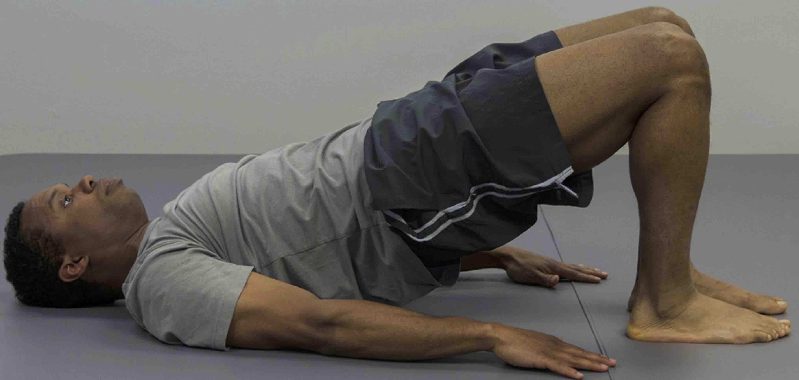

Pont de glutis- Intermedi
COM FER-HO PAS A PAS:
- Tomba’t d’esquena amb els genolls flexionats i els peus junts a terra.
- Col·loca els braços al costat del cos.
- Eleva el maluc cap amunt mantenint les cames juntes.
- Mantingueu la posició 2-3 segons.
- Baixa lentament el maluc sense tocar completament el terra i repeteix.
SERIES:
- 3-4 sèries de 12-15 repeticions.
- Descans de 30-45 segons entre sèries.
CONSELLS:
- Contracta el core i els glutis durant tot el moviment.
- Mantingueu l’esquena recta sense arquejar-la.
